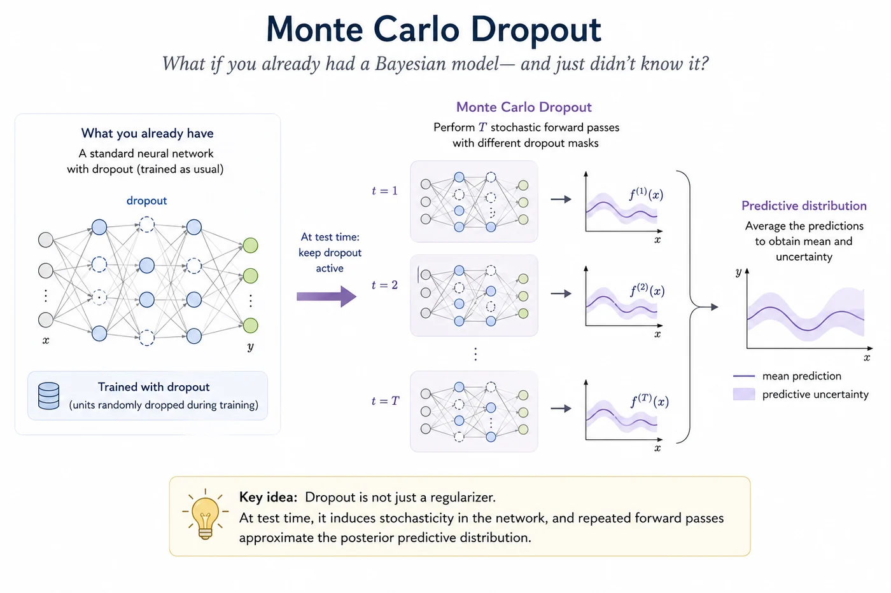
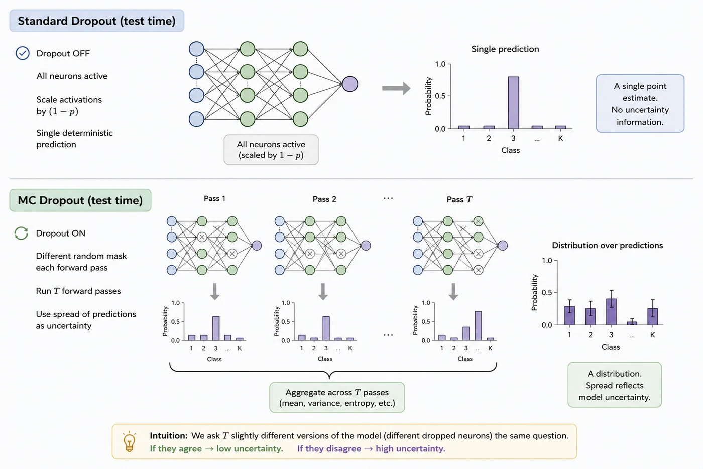
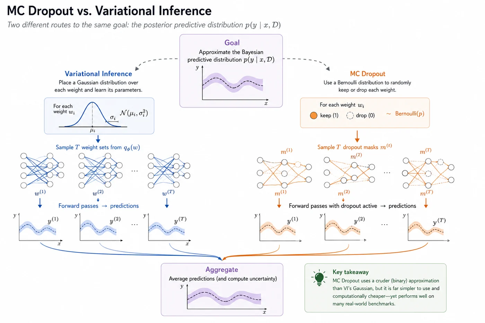

Session 7 — Monte Carlo Dropout¶
What if you already had a Bayesian model — and just didn't know it?

🔗 Bridge from Session 5, 6¶
Variational Inference gave us principled Bayesian uncertainty — but it came with real costs. We doubled the number of parameters, rewrote the loss function, and had to carefully balance two competing terms during training. It worked, but it wasn't cheap.
MC Dropout asks a different question entirely: what if we didn't need to change the model at all? What if the tool we needed was already sitting inside every neural network we've ever trained — we just had to use it differently at inference time?
That's the insight this session is built around. And it turns out to be one of the most consequential ideas in practical UQ.
What you'll learn in this session¶
- How keeping dropout active at test time turns any neural network into an uncertainty estimator
- The mathematical insight from Gal & Ghahramani (2016) that connects dropout to Bayesian inference
- Where MC Dropout works well, and where it quietly falls short
🎲 1. Dropout — what you already know¶
You've almost certainly used dropout before. During training, it randomly sets a fraction $p$ of activations to zero at each forward pass. No two forward passes see exactly the same network — each one uses a slightly different, randomly masked version of the model. The intuition is that this forces the network to learn redundant, robust representations rather than relying on specific neurons.
At test time, the standard procedure is to turn dropout off. All neurons are active, and the result is a single, deterministic prediction. That's how every standard PyTorch model with model.eval() behaves.
This is the only thing that changes in MC Dropout: we keep dropout on at test time. That's it. The model is unchanged. The training procedure is unchanged. The only difference is that at inference time, we run T forward passes with dropout still active, and we treat the spread of those predictions as the model's uncertainty.
💡 Intuition check
Think of it like asking the same question to T slightly different versions of the model — each one with a different random subset of neurons switched off. If all T versions agree, the model is confident. If they disagree, the model is uncertain. The disagreement is the uncertainty.

Monte Carlo dropout approximates a distribution over model outputs by evaluating multiple stochastic subnetworks at inference, enabling uncertainty estimation from predictive variability.
🔬 2. The key insight — Gal & Ghahramani (2016)¶
In 2016, Yarin Gal and Zoubin Ghahramani published a paper that reframed dropout entirely. They showed that a neural network trained with dropout and evaluated with dropout active at test time is mathematically equivalent to approximate Bayesian inference in a deep Gaussian process.
More precisely: running T stochastic forward passes with dropout is equivalent to drawing T samples from a variational distribution over the model's weights. The dropout mask is implicitly defining a distribution over which neurons are active — and that distribution over active neurons corresponds to a distribution over model weights.
This is a remarkable result. Without changing anything about how the model is built or trained, you get:
- A distribution over predictions — by collecting T outputs
- An approximation to the posterior predictive distribution — the same object we defined in Session 4
- Epistemic uncertainty — from the spread across T predictions
The key difference from VI is what kind of approximate posterior this is. VI uses a Gaussian variational distribution — one mean and one variance per weight. MC Dropout implicitly uses a Bernoulli mixture — each weight is either present or zeroed, according to a Bernoulli draw. It's a cruder approximation family, but it's free: it requires no extra parameters, no ELBO, no KL term. You already have it.
🔄 3. Comparing MC Dropout to Variational Inference¶
Both methods are trying to approximate the same thing — the posterior predictive distribution from Session 4. But they go about it very differently.
| Variational Inference | MC Dropout | |
|---|---|---|
| Approximate posterior | Gaussian — $\mathcal{N}(\mu_i, \sigma_i^2)$ per weight | Bernoulli mixture — weight is present or zeroed |
| Extra parameters | 2× (mean + variance per weight) | None |
| Training change | New loss (ELBO), new optimizer setup | None — trains exactly like a standard network |
| Inference | T samples from $q_\phi(w)$ | T forward passes with dropout active |
| Compute cost | Higher (ELBO is more expensive) | Same as standard inference × T |
| Expressiveness | Richer — Gaussian captures spread | Cruder — binary masking |
| Ease of use | Moderate — requires library setup | Very easy — two lines of code |
The honest takeaway: MC Dropout is not a better Bayesian approximation than VI. It is a cheaper and more convenient one. Whether the convenience is worth the approximation quality is an empirical question — and on many benchmarks, the answer is yes.

Variational Inference explicitly models uncertainty in the parameter space, whereas MC Dropout induces uncertainty through stochastic network architectures. Despite their different assumptions, both estimate predictive uncertainty by aggregating predictions across multiple model realizations.
🔧 4. Practical considerations¶
MC Dropout is simple in principle but has a few practical details worth knowing before you implement it.
📍 Dropout placement matters¶
Where you place dropout layers in the network affects what uncertainty you capture. Dropout after convolutional layers applies stochasticity to spatial feature maps — this produces spatially varying uncertainty, useful for segmentation. Dropout before the final classification layer (the most common placement) produces uncertainty at the decision level — useful for classification.
For a pretrained backbone like DenseNet121, adding dropout only before the final layer (which is what most medical imaging UQ papers do) is the safest and most interpretable choice.
🎚️ The dropout rate tradeoff¶
The dropout rate $p$ controls how aggressively weights are masked. A higher $p$ means more variation between forward passes — more uncertainty. But it also means each individual prediction is noisier and less accurate. In practice:
- $p = 0.1$–$0.3$: mild — good for well-trained models, produces meaningful but not excessive uncertainty
- $p = 0.5$: standard — the classic choice, but may produce too much noise on small datasets
- $p > 0.5$: rarely useful — predictions become too noisy to trust
The dropout rate should match what was used during training. Using a different rate at test time breaks the theoretical connection to VI entirely.
⚡ T — how many forward passes?¶
More T means a better estimate of the predictive distribution, but at a linear cost in compute. In practice:
- $T = 10$: fast, reasonable for real-time screening
- $T = 20$–$30$: the sweet spot for most medical imaging tasks
- $T > 50$: diminishing returns — uncertainty estimates stabilise quickly
🔇 BatchNorm — the quiet pain point¶
This is the most common practical issue. BatchNorm layers behave differently in train() mode (using batch statistics) vs eval() mode (using running statistics). For MC Dropout, we want dropout active but BatchNorm in eval() mode — otherwise the stochastic batch statistics add noise that has nothing to do with the model's uncertainty. The solution is a custom inference function that puts the model in eval() mode but re-enables dropout manually.
⚠️ 5. Limitations¶
MC Dropout is widely used and genuinely useful. But it's worth being clear about where it falls short — especially compared to what the 2016 paper promised.
⚠️ The implied prior is not always what you want
MC Dropout assumes a built-in prior where some weights are randomly turned off. This may not match the kind of uncertainty or prior belief you actually want for your problem. VI lets you choose your prior explicitly. MC Dropout doesn't.
⚠️ Cannot learn uncertainty per weight
MC Dropout treats all weights in a very rough way: each weight is either kept or dropped randomly. It does not learn how uncertain each individual weight is. So it cannot represent fine-grained uncertainty across the network parameters.
⚠️ Dropout rate is hand-designed
The dropout probability is not learned from data. You have to choose it manually. This makes the method sensitive to tuning, and different choices can significantly change both accuracy and uncertainty quality.
⚠️ BatchNorm interactions can be problematic
MC Dropout does not always work well with Batch Normalization. During training and testing, BatchNorm uses different statistics, and combining this with stochastic dropout can make uncertainty estimates unstable or inconsistent.
⚠️ Not all architectures accommodate dropout well
Architectures with skip connections (ResNets), dense connections (DenseNets), or heavy BatchNorm usage don't always play nicely with MC Dropout. Adding dropout to the wrong place can hurt accuracy without meaningfully improving uncertainty estimates.
📚 6. Recommended reading¶
These are the most important and widely cited papers behind Monte Carlo Dropout: first dropout as regularization, then dropout as approximate Bayesian inference, then extensions and empirical evaluations of uncertainty under shift. 🗺️
Dropout: A Simple Way to Prevent Neural Networks from Overfitting
Srivastava et al., 2014 — JMLR
The definitive dropout paper and one of the most cited deep-learning regularization references. It explains dropout as an efficient approximation to averaging many thinned networks, which is the intuition MC Dropout turns into a test-time uncertainty method.
Dropout as a Bayesian Approximation: Representing Model Uncertainty in Deep Learning
Gal & Ghahramani, 2016 — ICML
The central MC Dropout paper. It shows that keeping dropout active at test time can be interpreted as approximate Bayesian inference in deep Gaussian processes, giving a practical way to estimate predictive uncertainty from ordinary dropout networks.
Concrete Dropout
Gal, Hron & Kendall, 2017 — NeurIPS
A major follow-up that learns dropout probabilities automatically instead of treating them as fixed hyperparameters. Useful when the choice of dropout rate strongly affects uncertainty quality.
What Uncertainties Do We Need in Bayesian Deep Learning for Computer Vision?
Kendall & Gal, 2017 — NeurIPS
A highly cited computer-vision paper that connects MC Dropout to the aleatoric/epistemic decomposition. It is especially useful for understanding how test-time sampling can separate model uncertainty from data noise.
✅ Session summary¶
| Concept | Key takeaway |
|---|---|
| 🎲 The trick | Keep dropout active at test time. Run T forward passes. Collect predictions. |
| 🔬 The theory | Gal & Ghahramani (2016): this is approximate Bayesian inference under a Bernoulli posterior |
| 🔄 vs VI | Cheaper, no extra parameters, easier to implement — but cruder approximation |
| 🔧 Practical tips | Match train/test dropout rate, use T=20, keep BatchNorm in eval() mode |
| ⚠️ Limitations | Cannot learn per-weight uncertainty, implied prior may be inappropriate, dropout rate is hand-tuned, BatchNorm interactions can be problematic, not all architectures are dropout-friendly |
| 🔜 Next | Implementation of MC dropout |
➡️ Next: Session 8: MC Dropout Implementation
Session 8 turns MC Dropout into a working chest X-ray pipeline: we will add dropout to DenseNet121, train the model normally, keep dropout active at inference time, run repeated stochastic forward passes, and use the resulting prediction spread to estimate uncertainty in real medical images.